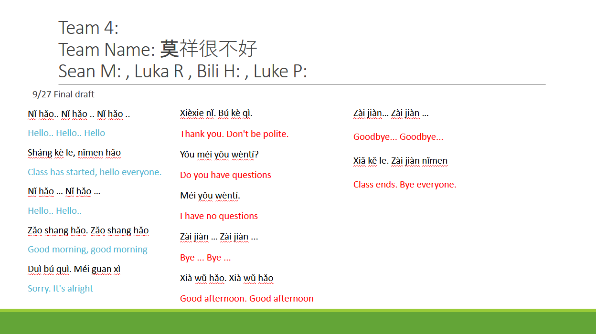
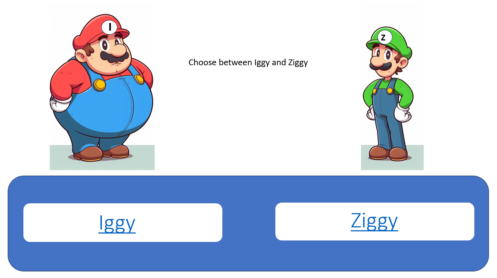
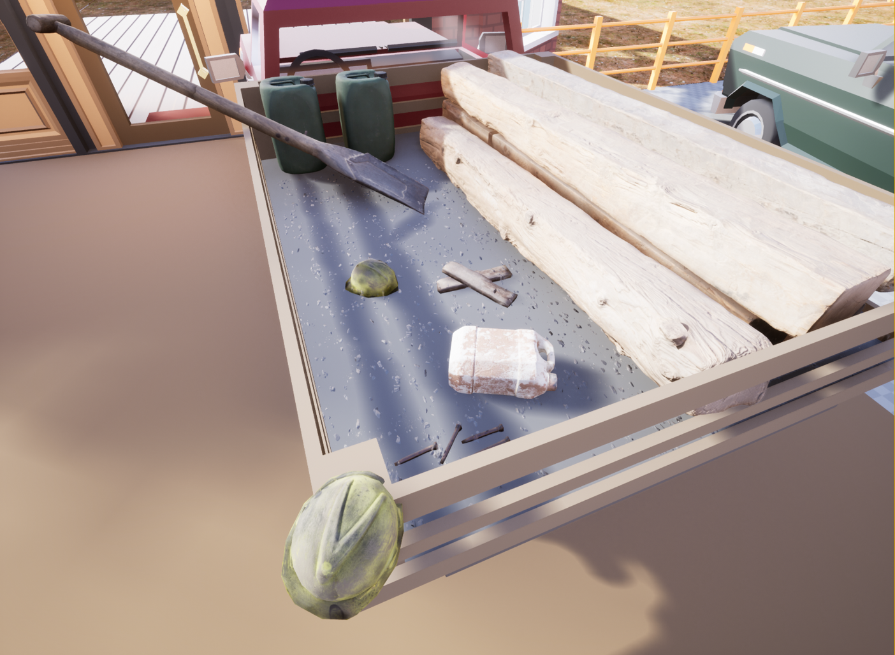
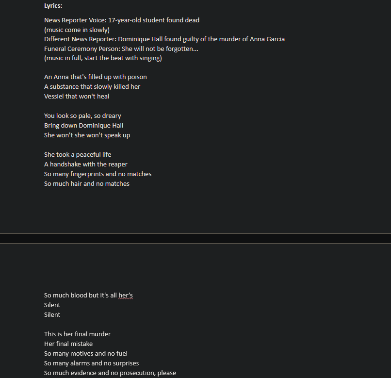

Chinese Rap Project
The Chinese Rap Project's goal is to create a catchy rap video that is able to teach a few words to someone who knows no Chinese words. Which is later shared to new 6th Grade DRSS students and shared to the friends and family of DRSS at exibition night. Below is Bili Hamed, Sean Murphy, Luka Rao, and I's rap video.
My Growth
This project has challenged me and allowed me to grow creatively. I have never wrote/rapped a song, or directed a music video before, which definitely made this project more difficult for me. I really wanted to be able to create a rap video that would be able to get a few laughs out of the audience (to be a funny bad).
This is an image of our final lyrics. In the beginning few drafts of our lyrics we were thinking about doing a darker theme. That is until, we remembered that our audience is 6th Graders so we pivoted to a happy theme about having a good day. None of our group members have truely wrote or rapped a song, so we collaborated and strived to make our lyrics a success. But lyrics is just one part of the music video.
I was mainly the director and editor in every scene of the music video. I had never directed a video before, but the oppurtinity was very fun and I'm so glad that the scenes came out the way I wanted them to. I have edited many videos before, but this was my first time editing a music video. It was the first time I've really been able to tell a story through editing. The GIF you see above is a scene that took me about 3 hours to edit alone. The scene has 3 elements, Luka kicking a water bottle into a goal, Luka attempting to guard the goal, and a blank shot of just the goal. My goal was to merge all of these elements into a single scene. Though, after I did that I felt that it didn't have enough charater. So I decided to create a glitching affect my taking in and out each base element rapidily, and I got the affect you see above, which I'm very proud of. I had never done anything like this project before but with my creativety to create something cool, collaboration to help us create lyrics, inquiry with searching editing affects online, persistence to get me through the long editing session, and communication with my group about what we wanted to create, we able to create this, in my opinion, pretty cool product.
Nutrition Project
The Nutrition Project, was a project in which we were asked to create an interactive lesson plan more young children. This was done to educate young children on Nutrition, topics like impacts of sugar, water, obesity, and underweightness were a focus. These interactive lesson plans would be then critqued by Wright State Students.
The Nutrition Project helped me grow in communication. While being a group project with 3 people I had to communicate with some of my group members about their collaboration with the project. Before growing in communication, I would have just done all of the work causing the quality of the final project to go down.
Game Design
In Game Design 1 we're tasked with making a game of our choice. My group's game is a 3D platformer that is set in a futuristic multi-plant world. Our game is about a girl, who is finacially struggling, deciding to become a Amazing delivery driver and ends up on the planet Earth for a special fight with a billionare.
In the creation of this game, I've grown in persistence. Game Design 1 is a after school class that we have twice a week, this causes problems when we look at how much time we have to create our game. Before growing in persistence, I would just doing my work all at school, this caused me to have very low quality work. After, I started taking an external SSD to do my work at school and home.
Case Closed
The Case Closed project was a project in which we were to create a peice about the passing of Ana Garcia. Ana Garcia was a fictional character in our Biology unit where we learned that she was murdered by someone and we had to figure who did it. To spoil the lore, her classmate and sports teammate murdered her.
Above is the Script, and audio file of my groups project where we wrote a song based off of the song No Surprises by Radiohead. In the song, we tell the story about Anna Garcia being murderered by Dominique Hall, and call for her prosecution. I grew in collaboration, as this was a 3 person group I had to work with my team to create the script. Before growing in collaboration, I may not have helped my project as much causing us to have a lower quality product.